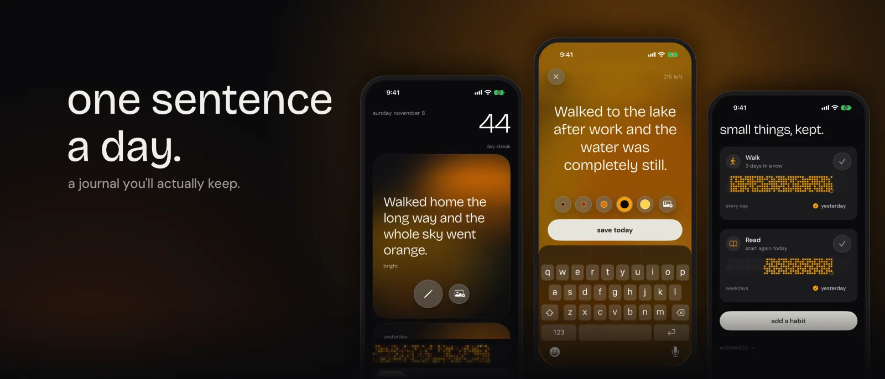
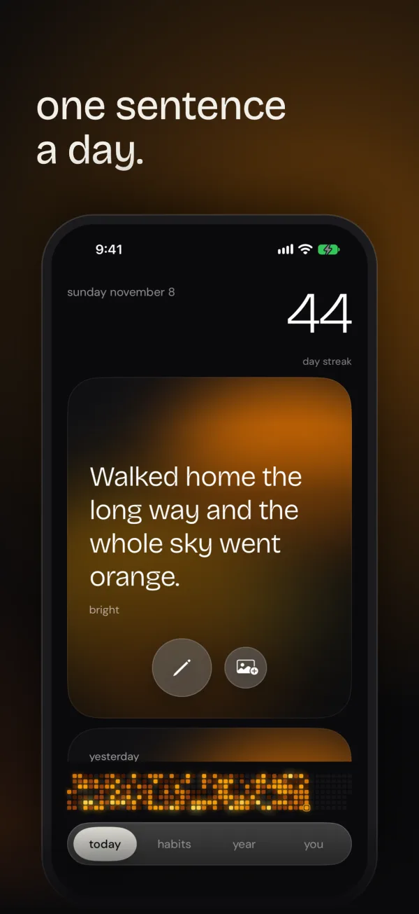
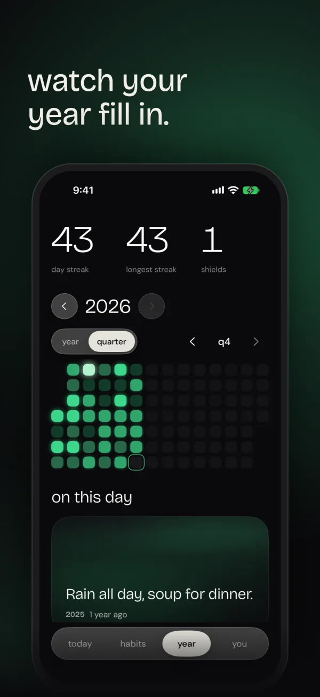
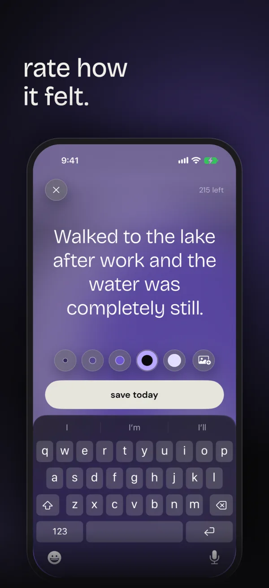
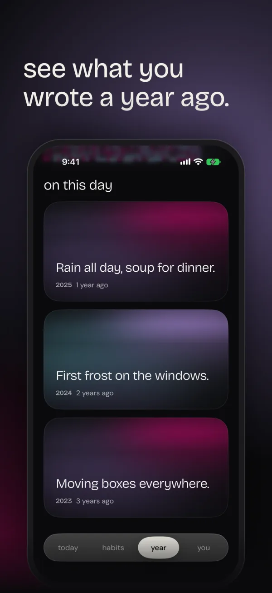
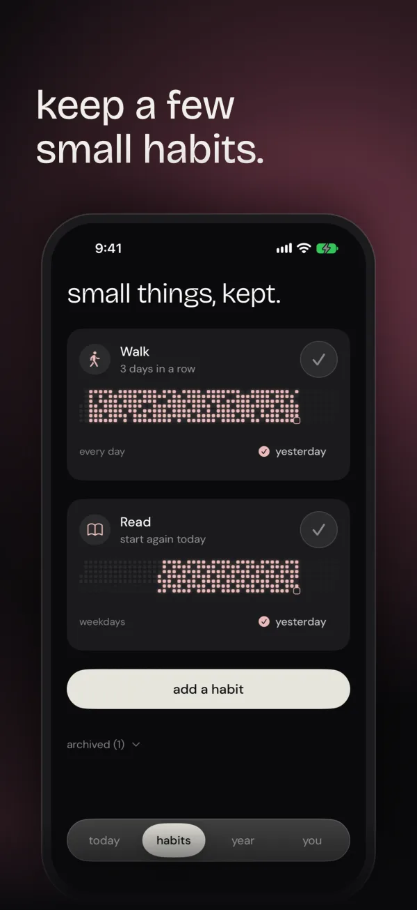
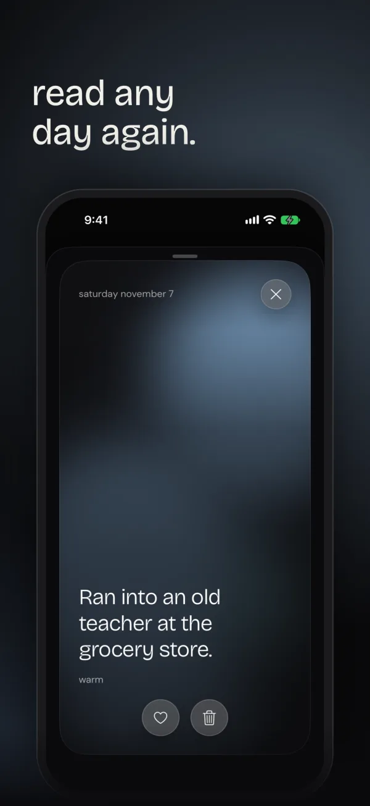
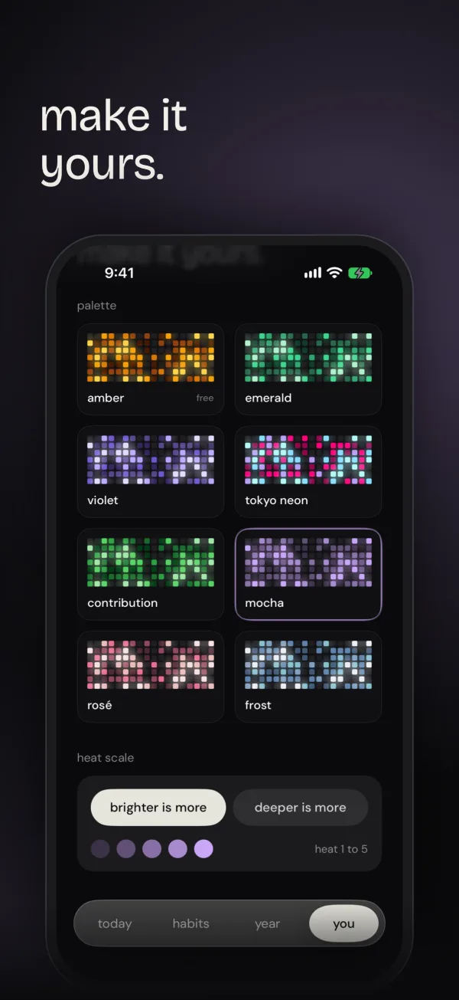
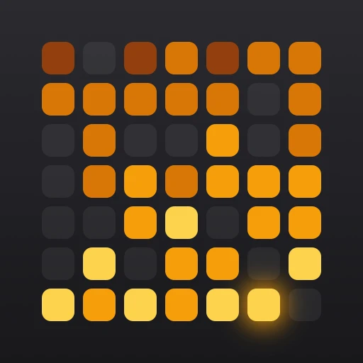

cadence
one sentence a day.
about
Cadence is a daily journal for iPhone that asks for one sentence a day: 280 characters, or up to eight sentences if you choose. Each day becomes a glowing tile in a 365-day grid, coloured by a 1 to 5 rating, so the year fills in as you write it. Every morning the Lock Screen shows what you wrote a year ago. Streaks come with a Streak Shield, Milestones mark 7, 30, 100 and 365 days, and small habits keep a few other things in view. There is no account, no server and no analytics, and entries sync only through your own iCloud. Cadence is free, with optional Pro as an annual plan with a 3-day trial, or monthly. Made by Rushil, a solo developer.
key facts
- name
- Cadence – a daily journal
- platform
- iPhone, iOS 17 or later
- price
- Free, with in-app purchases
- privacy
- Data Not Collected
- developer
- Rushil, solo developer
- press contact
- PRESS_EMAIL
- app store
- APP_STORE_LINK
screenshots

download header · 3840 × 1646 png · 3.6 MB


one sentence a day.download · 1206 × 2622 png
watch your year fill in.download · 1206 × 2622 png
rate how it felt.download · 1206 × 2622 png
see what you wrote a year ago.download · 1206 × 2622 png
keep a few small habits.download · 1206 × 2622 png
read any day again.download · 1206 × 2622 png
make it yours.download · 1206 × 2622 png


videos
- setting up download mp4 · 1080 × 1920 · 0.5 MB
- the year grid download mp4 · 1080 × 1920 · 0.7 MB
- writing a day download mp4 · 1080 × 1920 · 1.4 MB
app icon


A grid of days as amber tiles, brighter for the better ones, the way the year grid draws them.
download icon · 1024 × 1024 png · 0.2 MB
everything, in one go.
Seven screenshots, the header image, the app icon and three videos, as one zip.
download the press kit cadence-press-kit.zip · 18.6 MB